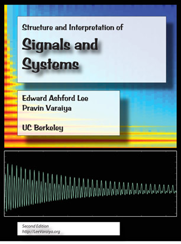

|
 |
Lee and Varaiya, Structure and Interpretation of Signals and SystemsSignals convey information. Systems transform signals. This book introduces the mathematical models used to design and understand both. It is intended for students interested in developing a deep understanding of how to digitally create and manipulate signals to measure and control the physical world and to enhance human experience and communication. This book is based on several years of successful classroom use at the University of California, Berkeley. The material starts with an early introduction to applications, well before students have built up enough theory to fully analyze the applications. This motivates students to learn the theory and allows students to master signals and systems at the sophomore level. The material motivates signals and systems through sound and images. Calculus is the only prerequisite.
Paperback: Second Edition, Printing 2.04 (LuLu.com) Download: Second Edition, Version 2.04 (10 Mbytes). Download: MATLAB-based lab exercises (5 Mbytes). Link: LabVIEW-based lab exercises (5 Mbytes). Please cite this book as: Edward A. Lee and Pravin Varaiya, Structure and Interpretation of Signals and Systems, Second Edition, LeeVaraiya.org, ISBN 978-0-578-07719-2, 2011. Please send any and all corrections, comments, and suggestions to eal@berkeley.edu. |
The first edition was published by Addison Wesley in 2003. This book has an associated Lab Manual that includes well-integrated MATLAB and Simulink labs.
Preview the Book:
To read this on an iPad, we recommend using GoodReader, which can download the book directly from the web (just enter leevaraiya.org). But any app that can read PDF files should do. To read this on a computer, you can use:
- Adobe Acrobat Reader, a free download for reading PDF files. Sadly, by default, hyperlinks are not very useful because there is no back button. You can enable a back button by selecting Customize Toolbar in the Tools menu. Near the bottom of the extensive list of options are two options labeled "Previous View" and "Next View". Enabling those will make reading more pleasant.
- Adobe Digital Editions, a free download with a convenient two-page spread display format. Sadly, hyperlinks are not very useful because there is no back button nor any option to add one.